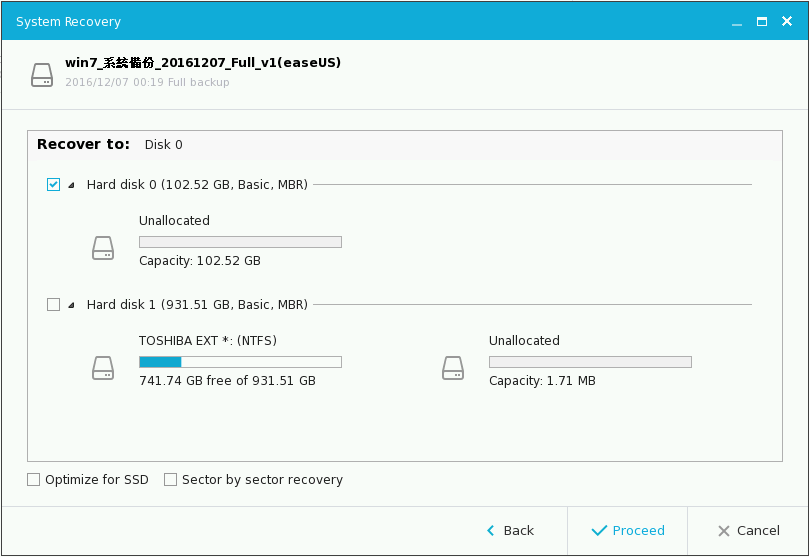

多年以前我都是用 Ghost 這套軟體來備份整顆硬碟，最近又需要備份硬碟的功能，於是拿出了這個陳年的產品，卻發現 Ghost 一定要使用磁碟片才能回復系統，現在都 2016 年了，哪有電腦還裝著磁碟片，說不定正在讀這篇文章的你根本就沒看過磁碟片吧，後來我試著把 Ghost 弄到光碟片上，但是一直搞不定開機檔 (bootable image)，就在此時，我在網路上看到了 EaseUS Todo Backup 這個軟體，先不管功能好不好用，重點是 "免費"，免錢的就先頂著先，沒想到它的功能這麼強大，各位一定要下載回去試用看看。
為什麼要備份?
我朋友曾經被駭客安裝綁架軟體，惡意鎖住他整個系統檔案，包含個人照片，影片，文件，他哭著來找我幫忙，但是我是一點也幫不上忙，畢竟駭客軟體又不是我寫的，想要反破解也不是一天兩天的事，我只能跟他說，以後要記得時常備份，尤其是你越看重的照片，更應該常常備份。
電腦硬體壞掉也是很突然的，顯示卡、主機版，記憶體這些硬體設備很堅強，用個十年可能也不會壞，但是說不定你就是那個到楣鬼，別人碰不到的，被你碰到，一旦硬體設備出現狀況，而你又對電腦不熟析，也只能把電腦拿去給電腦公司維修，電腦搬運的過程也有機會把硬碟給撞壞掉，你的個人照片很可能在一瞬間就全沒了。
其它還有很多種因素會造成資料遺移，總之多備份就對了，但現要介紹的這個軟體叫 EaseUS ，它是我用過最強大的備份軟體。
EaseUS 免費版可以幫我們做什麼呢?
- 硬碟/磁碟區鏡像備份與還原
- 系統鏡像備份，包含所有的應用程式，帳戶資料。
- OS 複製，將 A 機器的環境複製到 B 機器，有點像借屍還魂
- 設固定時間，自動備份
- 最大支援 16 TB 硬碟
- 支援 Windows 10/8/7/Vista/XP
付了錢之後有什麼好處呢?
如果你的備份需求異於常人，或是你是公司行號，那麼你可以考慮付費來穫得以下更好的服務：
- 備份速度快兩倍
- 支援 outlook 備份/還原
- Event-base schedule
- Email 提醒你備份結果
- EaseUS 技術支援
- 其它請看官網或詢問官方
其實免費版的功能就已經很強了，這家公司真的佛心，付費版的功能大概只有公司等級才有這些需求，對我們小老百姓來說，免費版功能就非常的足夠。
鏡像備份硬碟
EaseUs Todo Backup 這套軟體最重要的功能就是備份整顆硬碟，首先你要下載並安裝 EaseUS ，打開它之後，你就會先到下面這個 EaseUS 首頁。
再來就選擇上方選單的系統備份，接著它就會要你選擇備份哪一個系統，因為我只裝一個 Windows 系統，所以頁面上只會有 Windows 7 可以選。
接著選擇 "目標路徑"，修改備份檔儲存的地方，這裡我是直接存到我的行動硬碟。
再點擊 "備份選項"，裡面有壓縮比率，加密，性能的進階功能，我個人是沒有特別修改這些設定值，一般的壓縮比率約為 43%，我的作業系統 32.9 GB ，備份完成後，檔案只有 14.4 GB，雖然鏡像備份整個硬碟檔案會很大，無法存在一片光碟裡面，但是現在行動硬碟很方便，直接存在行動硬碟上即可。
最後按下執行，EaseUS 就會開始鏡像備份，備份時間依系統大小而定，我大約等了 50 分鐘，最好的辦法是電腦開著人去睡覺，隔天就備份完成囉，EaseUS 也有提供備份完成後自動關機的功能非常方便。
如何還原系統
EaseUS 的還原過程都是圖形化介面，操作非常簡單，首先你要製作一個還原光碟，打開 EaseUS Todo Backup ，裡面有個選項 工具 →建立開機碟 ，打開這個選項直接執行，就會得到一個 iso 檔，把這個檔案燒光碟就是了。
還原光碟的檔案我已經製作好了，你也可以直接從這裡下載：
放入還原光碟重開機後，你會看到 EaseUS 的還原選單，我們要選 EaseUS Todo Backup。
進入還原功能頁後，我們要選 "Browser to Recover"
再來 EaseUS 會要求我們選擇備份檔，就是上一段文章中介紹的備份檔 (我的有 14.4GB) ，如果你是把備份檔存在行動硬碟或 USB ，記得先把 USB 插上電腦。
選擇要還原的系統槽，通常就直接選擇 C 槽就行了。
再來又要選一次硬碟，通常會是 Hard Disk 0 ，把這一顆硬碟打勾就行了，如果你的電腦有多顆硬碟，那麼可以用硬碟容量來區分。
這樣就開始還原囉，還原完開機 Windows 就會回到上次備份的狀態。